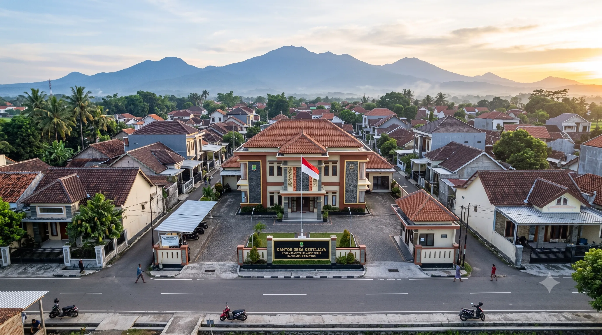

Mengenal lebih dekat Desa Kertajaya, Jayakerta.

Desa Kertajaya merupakan salah satu dari 8 desa yang berada di bawah wilayah administrasi Kecamatan Jayakerta, Kabupaten Karawang. Wilayah Kecamatan Jayakerta sendiri merupakan hasil pemekaran dari Kecamatan Rengasdengklok.
Berdasarkan data tahun 2022, pemerintahan Desa Kertajaya dipimpin oleh Kepala Desa Saepi Anwar. Secara aksesibilitas, jarak dari desa menuju Kantor Kecamatan Jayakerta adalah 7,5 km, sedangkan jarak menuju pusat pemerintahan (Kantor Bupati Karawang) berjarak 32 km.
Posisi strategis Desa Kertajaya dibatasi oleh wilayah-wilayah berikut:
Secara geografis, dataran di wilayah Kecamatan Jayakerta memiliki tanah yang subur serta dialiri oleh jaringan sungai dan saluran irigasi, yang menjadikannya sebagai salah satu lumbung padi. Hal ini tidak hanya memajukan sektor pertanian Kertajaya, namun juga menumbuhkan potensi ekonomi lokal di sektor UMKM dan industri rumahan melalui semangat gotong royong warga.